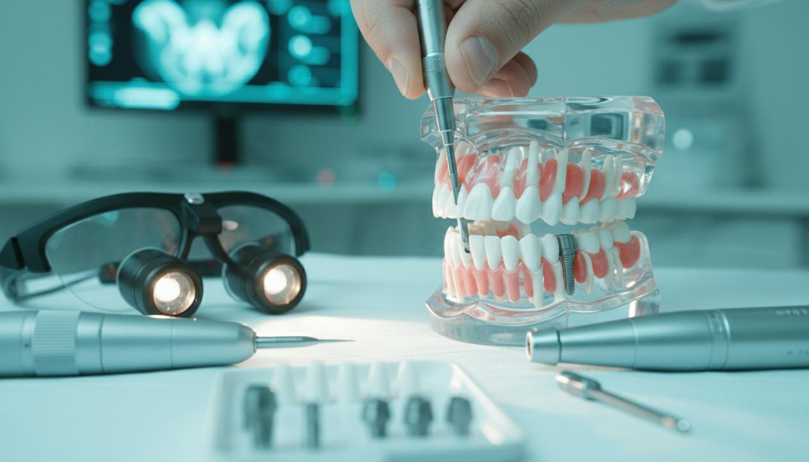
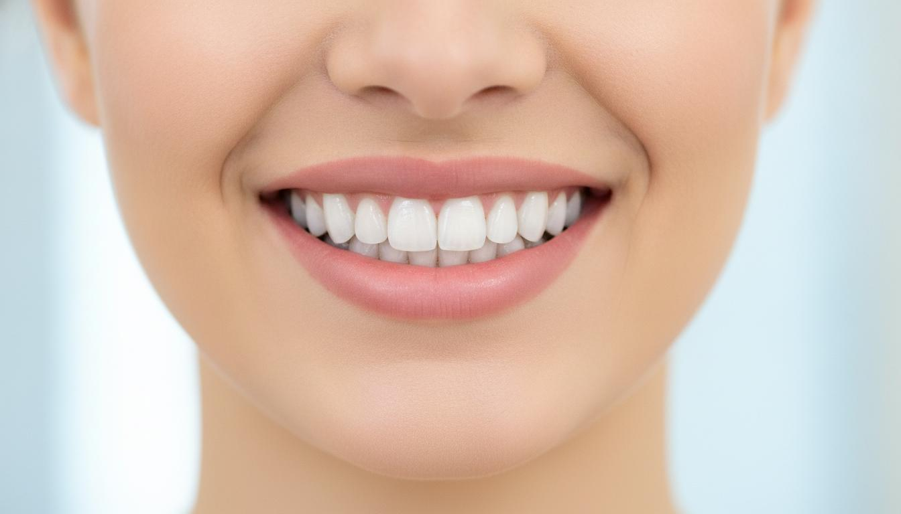
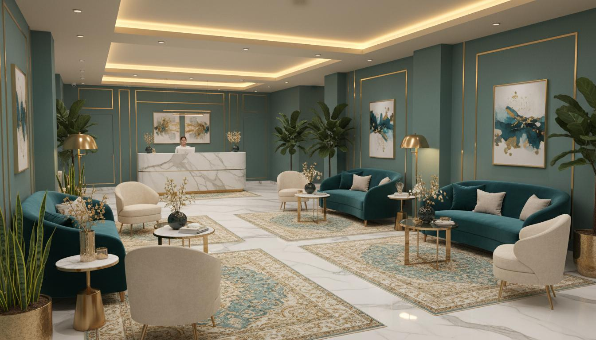
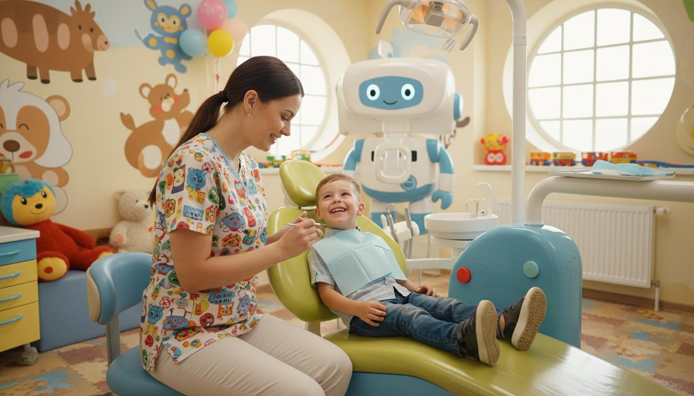
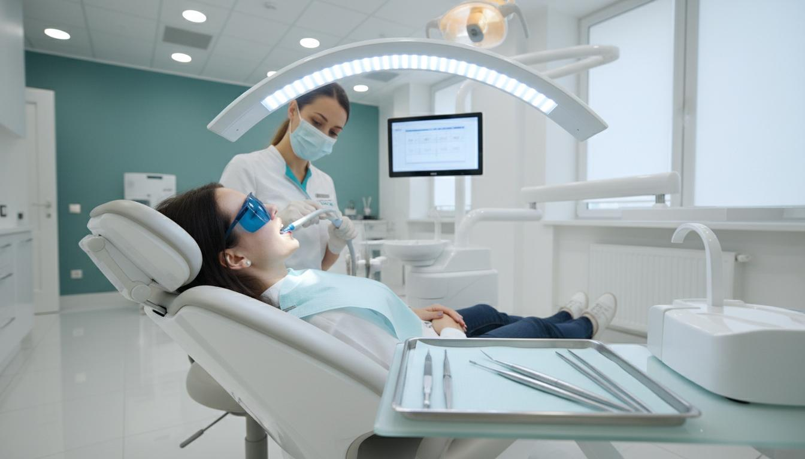
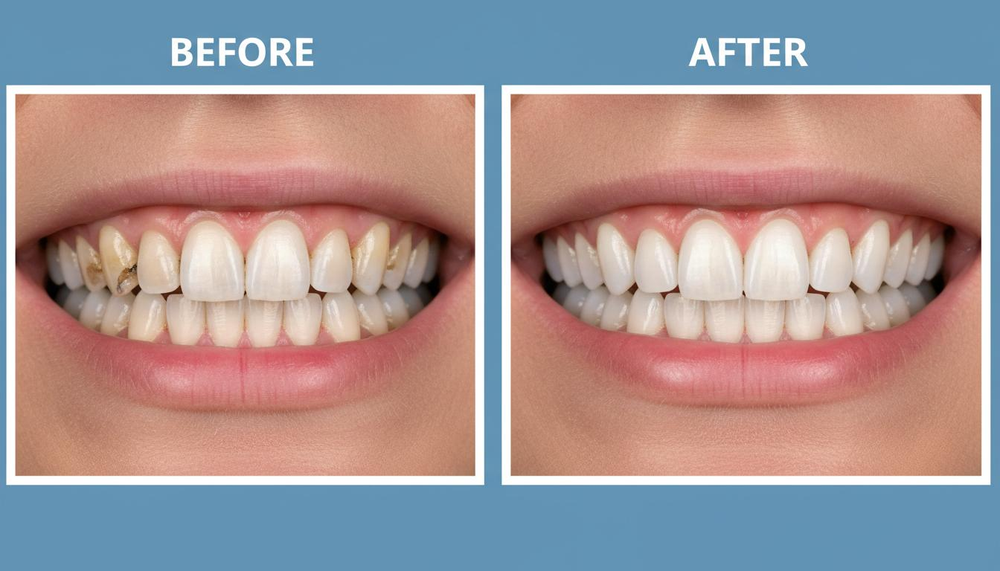

خدمات تخصصی
هر درمان، یک مسیر روشنتر
از شناخت هدف و محدودیتها تا سؤالهای مهم قبل از تصمیم؛ هر خدمت در یک مسیر مستقل، تصویری و قابل فهم توضیح داده شده است.
انتخاب آگاهانه
خدمات را بر اساس نیازتان بررسی کنید
هر کارت شما را به صفحهای میبرد که مراحل کلی، محدودیتها و نکات تصمیمگیری را بدون وعده نتیجه قطعی توضیح میدهد.

جایگزینی دندان
ایمپلنت دندان
از ارزیابی استخوان و طرح درمان تا جراحی، ترمیم نهایی و پیگیری.

زیبایی محافظهکارانه
لمینت و کامپوزیت
شناخت تفاوتها، محدودیتها و حفظ بافت دندان پیش از انتخاب.

حفظ دندان
درمان ریشه
علائم نیازمند بررسی، مراحل درمان و اهمیت ترمیم نهایی.

جراحی و ارزیابی ریسک
جراحی دهان و دندان
دندان عقل و مسیر ارزیابی جراحی با توجه به شرایط فردی.

تجربه کودکمحور
دندانپزشکی کودکان
پیشگیری، سازگاری رفتاری و درمان متناسب با سن.

زیبایی و بهداشت
جرمگیری و بلیچینگ
تفاوت جرمگیری و سفیدکردن و نکات ایمنی هر مسیر.

بازسازی عملکرد
پروتز و روکش
روکشها و پروتزها با تمرکز بر عملکرد، دوام و نگهداری.
تصمیمگیری دقیقتر
تصویربرداری دندانپزشکی
نقش رادیوگرافی در ارزیابی و برنامهریزی درمان بر اساس نیاز بالینی.